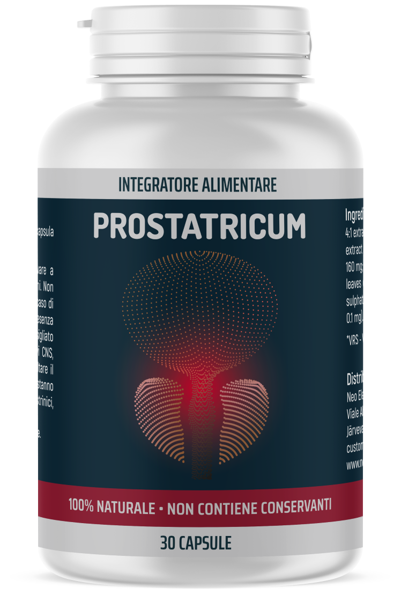

CONSULENZA CON UROLOGO:
"UN ALTRO SCANDALO NELL'AMBITO FARMACEUTICO! COSA CI VENDONO LE FARMACIE NOSTRANE PER LE CURE DELLA PROSTATITE E COME QUESTA MALATTIA SI CURA IN ALTRI PAESI DELL'UE, USA E CINA?"
Introduzione: Secondo le statistiche mediche, ai giorni nostri sono quasi assenti gli uomini con più di 35 anni che non hanno problemi di prostatite. In alcuni la prostata sta per infiammarsi, in altri è già così infiammata che ha bloccato le vie urinarie e ha comportato tantissimi disturbi della minzione e ha rovinato la loro vita sessuale. Ma anche in questo caso gli uomini non si affrettano ad andare dai medici per curarsi. Il motivo? Tutti sanno che il trattamento della prostatite è molto costoso e poco piacevole. Si devono prendere tantissimi antibiotici e bisogna recarsi dall'urologo per i massaggi rettali, la terapia con i rimedi popolari è anche spiacevole. Anche se riuscirete a sopportare tutto questo, c'è una probabilità del 90% di una ricaduta della malattia.
COME SBARAZZARSI DELLA PROSTATITE IN MANIERA DEFINITIVA? CE LO RACCONTA IL PRINCIPALE UROLOGO DEL PAESE.
Dott. Francesco Marchetti
Uno dei più eminenti medici d'Italia.
Membro dell’Accademia Europea di Urologia e Andrologia e della New York Academy of Sciences.
Esperto dei programmi televisivi medici. Coordinatore dell'Associazione Europea della Chirurgia Laser.
Esperienza di lavoro — 34 anni.
Corrispondente: "Dottor Marchetti, ci racconti quali saranno le conseguenze di una prostatite non curata e della minzione frequente? È vero che il trattamento con i metodi popolari può portare allo sviluppo del cancro alla prostata?"
Dott. Francesco Marchetti: Sì, è assolutamente corretto. La prostatite non svanisce mai da sola. Con l’andar del tempo la condizione del paziente peggiora soltanto. Se si sono manifestati i disagi alla minzione, è un brutto segno. Significa che la prostata è già ingrossata e in qualsiasi momento possono iniziare a formarsi cellule tumorali. Di solito, dal momento dei primi problemi alla minzione all'inizio dello sviluppo del cancro (nel caso del trattamento mancato della prostatite) passano 1-1.5 anni.
Dapprima il tumore maligno è asintomatico, ma poi le cellule tumorali si accumulano, il tumore aumenta le sue dimensioni e dopo qualche tempo la persona muore. Il cancro alla prostata è incurabile.
Tra l'altro, molti medici si mettono d’accordo con le farmacie e nascondono i rimedi efficaci, spillando regolarmente denaro dagli uomini. Ci sono sempre più uomini con questi problemi in età di 30, 25 o perfino 20 anni.
I medici spiegano la prevalenza della malattia con i fattori seguenti:
- • stile di vita sedentario;
- • vita sessuale irregolare;
- • cattivi abitudini;
- • malattie infettive;
- • predisposizione ereditaria;
- • stress.
Diagnosticare la prostatite è abbastanza facile anche senza l'istruzione medica:
- Dolori lancinanti:
- - Nel basso addome, nello scroto;
- - nel perineo o nel pene;
- Disturbi urinari:
- - minzione frequente, bruciore dell'uretra;
- - la sensazione della "vescica non completamente vuota";
- - difficoltà a urinare (flusso debole);
- Disturbi della funzione sessuale:
- - riduzione del desiderio sessuale;
- - deterioramento della durata e della qualità dell'erezione;
- Disturbo dell’eiaculazione:
- - eiaculazione precoce o problemi con il suo raggiungimento;
- - eiaculazione debole
Molti uomini convivono con la prostatite per anni, malgrado che la qualità della loro vita si peggiori significativamente. Non sospettano che questi disagi più o meno compatibili con la vita possono comportare le conseguenze irreversibili.
Corrispondente: "Allora cosa devono fare gli uomini affetti da questa malattia?"
Dott. Francesco Marchetti: Paragoniamo due metodi del trattamento della prostatite.
Come la prostatite si cura da noi (e come NON SI DEVE curarla)
La procedura standard del trattamento della prostatite ha inizio dal momento in cui ci si reca in una clinica o dal medico specialista. Non importa se è statale o privata, si deve pagare tanto in qualsiasi caso.
In aggiunta ai medicinali "raccomandati", per alleviare i sintomi i dottori prescrivono sempre il massaggio rettale della prostata o il trattamento con l'uso degli apparecchi con la stessa funzione. È una procedura umiliante e molto spiacevole – il massaggio è fatto con il dito tramite l'ano.
Il massaggio richiede in media 10-14 sedute. Per ogni seduta, ovviamente, si deve pagare. All'estero questo tipo di massaggio non lo fanno già da oltre 20 anni, siccome i rimedi moderni sono in grado di curare la prostatite da soli!
Come la prostatite si cura negli Usa, l'Ue e Cina (e come SI DEVE curarla)
Per guarire dalla prostatite non è necessario recarsi dal dottore. Basta andare in farmacia appena sono comparsi i primi sintomi e comprare un rimedio contro la prostatite che ha dimostrato la propria efficacia in giro di molti anni. Questo prodotto unico si chiama Prostatricum. Questo rimedio non è profittevole per la nostra mafia delle case farmaceutiche che guadagna sulla dipendenza dai farmaci che alleviano i sintomi dolorosi ogni anno. Non vogliono curare definitivamente il problema con l'aiuto di questo rimedio economico e abbordabile.
Corrispondente: "La situazione in Italia potrebbe cambiare? I nostri uomini riusciranno a sbarazzarsi del dolore?"
Dott. Francesco Marchetti: Credo di no. Per adesso è impossibile da trovare Prostatricum nelle farmacie del nostro paese. Paragoniamo Prostatricum e un altro farmaco per la cura della prostatite che è tanto amato dai farmacisti italiani:
| 
Prostatricum |
Altri farmaci |
|---|---|
Azione
|
Azione
|
Effetti aggiuntivi
|
Effetti aggiuntivi
|
Effetti collaterali, danni per l'organismo
|
Effetti collaterali, danni per l'organismo
|
| Principio di funzionamento• Agisce sulla prostata in modo integrato grazie alla formula naturale che contiene estratti unicie assicura un effetto antinfiammatorio e rafforzante. Elimina tutta la flora patogena, migliora la struttura e le funzioni della prostata. È raccomandato in caso della prostatite cronica, acuta e batterica. | Principio di funzionamento• Toglie temporaneamente le sensazioni dolorose alla prostata mascherando lo sviluppo della malattia. Dopo la fine del ciclo di assunzione la malattia si acutizza di nuovo. |
| Composizione• Ingredienti naturali vegetali
|
Composizione• Contiene ingredienti sintetici che causano gli effetti collaterali
|
Purtroppo non si può sperare in cambiamenti positivi nell’ambito del lavoro di farmacie e medici italiani, in quanto il business farmaceutico è grandissimo e dà i profitti apolitici potenti.
Per fortuna, ora non è necessario comprare i medicinali in farmacie. Il Ministero della Salute è consapevole del problema e della disponibilità del rimedio e ha deciso di prendersi cura dei propri cittadini: è stato firmato un accordo con il produttore e ciò ha permesso di vendere Prostatricum al prezzo scontato sul sito ufficiale del produttore. Per ordinarlo basta andare sul sito e lasciare la propria richiesta. La spedizione è possibile quasi in ogni angolo d'Italia, il pagamento è alla consegna.
Corrispondente: "Perfetto! Grazie per le informazioni, dottor Marchetti! Forse c’è qualcos’altro che vuole dire ai nostri lettori prima della fine della consulenza?
Dott. Francesco Marchetti:L'unica cosa che vorrei sottolineare è che non si deve essere indiffereni alla propria vita. La prostatite è una malattia molto pericolosa e con il mancato trattamento nel 75% dei casi si trasforma in un tumore maligno alla prostata. Se avete dei sintomi o vi hanno già diagnosticato la prostatite iniziate a combattere la malattia mentre si può ancora mettere un freno al suo peggioramento!
Parola alla redazione di "Medicina Italia":
L'opportunità di comprare Prostatricum con uno sconto del quale ne ha parlato dottor Marchetti è disponibile fino a 25.08.2020 incluso. Si può ordinare Prostatricum al prezzo scontato solo sul sito ufficiale del produttore.
L’offerta termina il
25 / 08 / 2020
78€
PREZZO
39€
Disclosure
![]()
![]()
![]()
![]()
![]()
![]()
![]()
![]()
![]()
![]()
![]()
![]()
![]()
![]()
![]()
![]()
![]()
![]()
![]()
![]()
![]()
434 commenti
Alessio Fontana
Grazie per l'articolo interessante! In Italia tutto è corrotto, meno male che abbiamo internet. Ho ordinato Prostatricum. Questa volta sconfiggerò la malattia!
5 ore fa
Alessandro Rinaldi
D’accordissimo! Ho comprato Prostatricum quando ero all'estero. Dapprima soffrivo dalla prostatite cronica per circa 10 anni. Ho provato di curarla, ma come è già scritto, il trattamento dava solo l'effetto temporaneo. Con l'uso di Prostatricum la prostatite è svanita completamente. Per più di sei mesi non provo nessun disagio. Dapprima potevo soltanto sognare di una cosa del genere. Consiglio Prostatricum a tutti gli uomini. Vi aiuterà!
5 ore fa
Francesco Longo
Grazie per la consulenza. Molto interessante. Ho sentito tanto di questo prodotto. Lo proverò.
4 ore fa
Marcello D'Angelo
Ho l'esperienza di trattamento della prostatite con questo rimedio. Ho ordinato sul sito indicato, ma a quel momento non c'era nessuna offerta speciale, il prezzo era 3 volte più alto. Ma non rimpiango, la cosa principale è che ha aiutato a sbarazzarmi della prostatite in 2 settimane senza i massaggi.
4 ore fa
Luigi Conte
Buongiorno! Ho ordinato Prostatricum 3 mesi fa, voglio condividere i miei risultati. Ho provato il miglioramento quasi subito. La minzione è diventata normale. Circa tra una settimana quasi non avevo più il bisogno di andare in bagno di notte. Credo che il gonfiore attorno alla vescica sia ridotto. Insomma, i sintomi precedenti diventavano sempre meno gravi.
Avevo paura che dopo il completamento del ciclo tutto ricominciasse di nuovo. Ma niente di questo è avvenuto! Tra un mese dopo il ciclo d'assunzione ho fatto un altro ECO che ha mostrato che sono completamente sano. Quindi, si può facilmente sbarazzarsi di questa malattia a casa, senza andare dai medici.
Avevo paura che dopo il completamento del ciclo tutto ricominciasse di nuovo. Ma niente di questo è avvenuto! Tra un mese dopo il ciclo d'assunzione ho fatto un altro ECO che ha mostrato che sono completamente sano. Quindi, si può facilmente sbarazzarsi di questa malattia a casa, senza andare dai medici.
4 ore fa
Paola Bianchi
Credo che possa essere utile a mio marito. Lo ordinerò. Grazie!
4 ore fa
Bernardo Morelli
Ho guardato un programma su Rai dedicato al business farmaceutico in Italia. È stato qualcosa tipo l'investigazione giornalistica. Parlavano anche di questo Prostatricum. Per adesso c'è, ma tra poco può essere escluso dal nostro mercato. Si deve comprarlo, mentre c'è ancora.
3 ore fa
Claudio Pellegrini
L'ho comprato. Non c'erano mai le offerte del genere. Grazie ai produttori!
3 ore fa
Sergio Benedetti
Ho la prostatite cronica dall'età di 28 anni. Ora ne ho 41. Entro questo periodo provavo di curarla due volte, quando c'erano le acutizzazioni. L'ultima volta i medici mi hanno appena salvato. Mi hanno spiegato che tra poco la prostatite avrebbe potuto trasformarsi nel tumore alla prostata. Ecco perché consiglio a tutti coloro che hanno la prostatite di sbarazzarsi di questa maledizione il più presto possibile. È una malattia pericolosissima.
3 ore fa
Elena Palmieri
Un rimedio ottimo, anche mio marito si è curato con questo prodotto. Il massaggio prostatico è davvero molto efficace, ma in caso delle acutizzazioni è vietato di farlo, e quando non ci sono i dolori forti, mio marito non vuole andare dal medico. Ha usato Prostatricum. Non gli servivano nemmeno gli antidolorifici, i dolori sono svaniti.
3 ore fa
Michele Caputo
Prostatricum è il rimedio migliore! Sono d'accordo con l'autore dell'articolo e con tutti i commentatori che l'hanno apprezzato. Lo usavo circa 3 mesi fa. La prostatite è svanita completamente! Dapprima ne soffrivo da qualche anno, il pene era moscio, venivo rapidamente. Ora tutto è normalizzato.
3 ore fa
Giorgio Sorrentino
Ho letto di Prostatricum sul sito. Impressionante! L’ho ordinato. Mi hanno promesso di consegnarlo tra 5 giorni. Molto comodo.
3 ore fa
Valentina Ferretti
Mio marito ama gli sport estremi: trekking, alpinismo, rafting e airsoft. Quindi, succede tutto, ma di queste situazioni mi racconta solo dopo, quando torna a casa. Una di queste avventure non è finita molto bene. Si è raffreddato e quasi subito si è manifestata la prostatite. Il medico ha prescritto Prostatricum.
Ha aiutato a sbarazzarsi della prostatite e a ripristinare la funzione sessuale in marito. Nonostante il fatto che aveva dei dubbi che tutto questo potesse aiutarlo. Pensava che fosse legato all'età, visto che in molti dei suoi amici dopo 40 anni sono comparsi i diversi problemi. Ma dopo il fine del ciclo di assunzione, marito non pensa più che sia vecchio.
Adesso continua a fare lo sport. Ha aggiunto anche il parapendio ai suoi hobby preferiti. Ma ora bada di più alla propria salute. Prima di tutto, prova di non raffreddarsi, se c'è la possibilità subito cambia i vestiti umidi, non aspetta fino alla prossima sosta. Ha anche cominciato a sempre mettere Prostatricum nel suo zaino. Dice che ci sono le diverse situazioni, è meglio iniziare a fare la profilassi subito senza aspettare la manifestazione della malattia e le torture che porta.
Ha aiutato a sbarazzarsi della prostatite e a ripristinare la funzione sessuale in marito. Nonostante il fatto che aveva dei dubbi che tutto questo potesse aiutarlo. Pensava che fosse legato all'età, visto che in molti dei suoi amici dopo 40 anni sono comparsi i diversi problemi. Ma dopo il fine del ciclo di assunzione, marito non pensa più che sia vecchio.
Adesso continua a fare lo sport. Ha aggiunto anche il parapendio ai suoi hobby preferiti. Ma ora bada di più alla propria salute. Prima di tutto, prova di non raffreddarsi, se c'è la possibilità subito cambia i vestiti umidi, non aspetta fino alla prossima sosta. Ha anche cominciato a sempre mettere Prostatricum nel suo zaino. Dice che ci sono le diverse situazioni, è meglio iniziare a fare la profilassi subito senza aspettare la manifestazione della malattia e le torture che porta.
3 ore fa
Daniele Vitale
+500. Ottimo rimedio.
3 ore fa
Edoardo Galli
Un consiglio utilissimo – meglio un rimedio che chirurgo.
2 ore fa
Lorenzo Bruno
Ragazzi, è qualcosa di incredibile! L'ho comprato 2 settimane fa. Ora non c'è più nessun sintomo della prostatite. Sono svaniti i dolori, non vado più al bagno ogni dieci minuti, non ci sono i disagi durante la minzione. L'erezione è significativamente migliorata, la durata del rapporto è aumentata. Ora sto benissimo. Vale la pena di comprarlo visto che c'è anche lo sconto. Sono pronto a pagare molto di più. L'efficacia del rimedio mi ha sorpreso.
2 ore fa
Tiziana Serra
Mio marito anche ha rinunciato al massaggio prostatico, gli uomini hanno dei strani pregiudizi su questo tipo di trattamento. Ma adesso non è molto importante. Ha preso Prostatricum, abbiamo attentamente letto le informazioni sulla formula del rimedio, mio marito è molto schizzinoso, ma questo prodotto davvero ha tutti i componenti vegetali e le vitamine che sono necessari per l'organismo maschile. Mio marito è contento, ha detto che non prova più alcun disagio.
1 ora fa
Fabio Martini
Ho fatto l'ordine, non è difficile, ho scritto il mio numero e il manager mi ha chiamato e ha spiegato tutto. Tra 2 giorni ho ricevuto Prostatricum, tutto è anonimo. Ho iniziato a prenderlo. Poi vi scrivo dei risultati. Grazie!
1 ora fa
Andrea Monti
Ho letto le recensioni e ho capito che si deve prenderlo! Anсh'iо lo соmprerò dopo la consulenza con lo specialista.
1 ora fa
Nino Rossetti
La prostatite mi ha colpito all'improvviso, si sono manifestati i terribili dolori al perineo, il bruciore durante la minzione. Era così grave che sono andato subito nell'ospedale, pensavo che fosse la prostatite, e avevo ragione, ma la prostatite era già cronica. Il medico mi ha prescritto un sacco di pillole, davano un certo effetto, ma non era costante...
2 giorni infernali. Ho deciso di comprare Prostatricum, anche se avevo dei dubbi. L'ho usato secondo le istruzioni. Insomma, tra un giorno sono finalmente riuscito a dormire normalmente senza andare nel bagno. Ho dimenticato della prostatite, come se fosse un brutto sogno.
2 giorni infernali. Ho deciso di comprare Prostatricum, anche se avevo dei dubbi. L'ho usato secondo le istruzioni. Insomma, tra un giorno sono finalmente riuscito a dormire normalmente senza andare nel bagno. Ho dimenticato della prostatite, come se fosse un brutto sogno.
27 minuti fa
Antonio Ferrara
Adesso è il prodotto No. 1, tutti lo consigliano! Ottimo rimedio, grazie.
11 minuti fa
![]() Consulenza sulle cure di impotenza
Consulenza sulle cure di impotenza![]() Consulenza sulle cure di ipertensione
Consulenza sulle cure di ipertensione![]() Consulenza sulle cure di psoriasi
Consulenza sulle cure di psoriasi![]() Consulenza sulle cure dei difetti della vista
Consulenza sulle cure dei difetti della vista![]() Consulenza sulle cure di diabete
Consulenza sulle cure di diabete![]() Consulenza sulle cure di varici
Consulenza sulle cure di varici![]() Consulenza sulle cure di fibromi penduli e verruche
Consulenza sulle cure di fibromi penduli e verruche![]() Consulenza sulle cure di obesità
Consulenza sulle cure di obesità![]() Consulenza sulle cure di osteocondrosi
Consulenza sulle cure di osteocondrosi![]() Consulenza sulle cure di micosi
Consulenza sulle cure di micosi